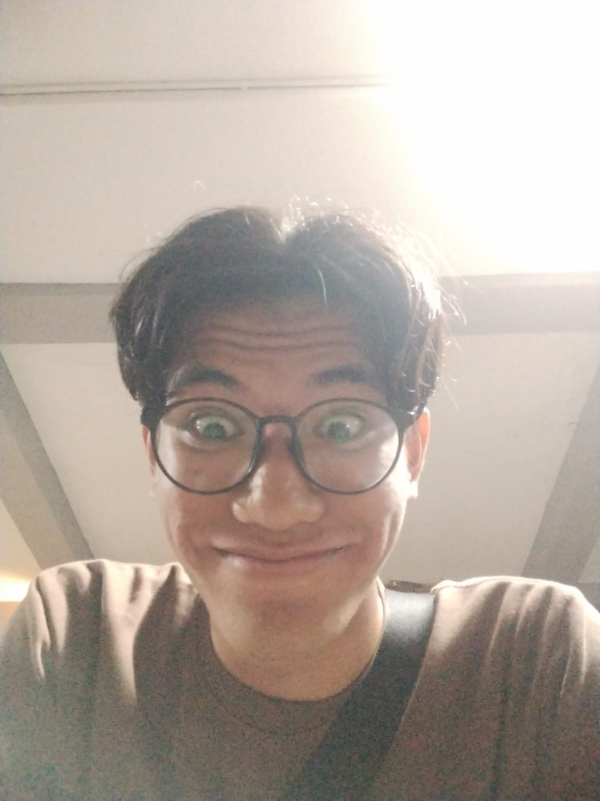

Hello, I am Widyanto Yudha Bratama, but people usually call me
Yudha or Tama. I am an undergraduate
Computer Science student at IPB University with a strong drive to
continuously learn and grow. This
curiosity pushes me to explore new technologies and deepen my understanding of software development,
particularly in the field of web development.
My passion for web development goes beyond just writing code — I genuinely enjoy the process of
transforming ideas into functional, meaningful applications. Through various projects and experiences, I
have developed skills in building real-world web solutions and am always eager to take on new challenges
that allow me to make a lasting impact through technology.